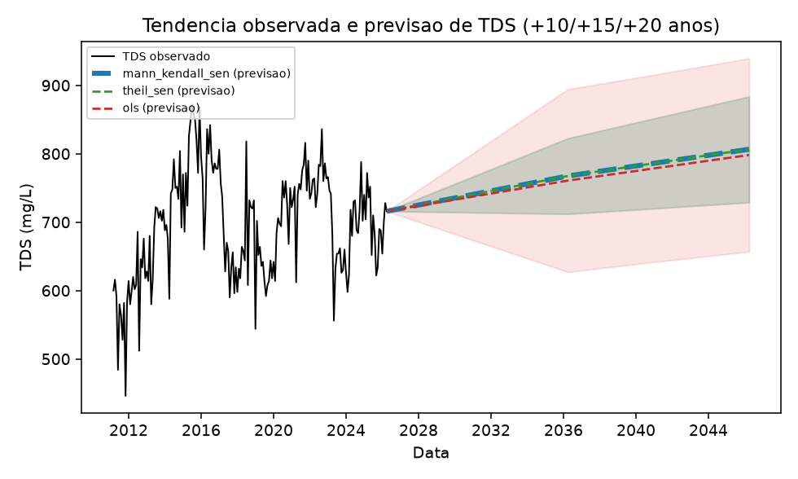
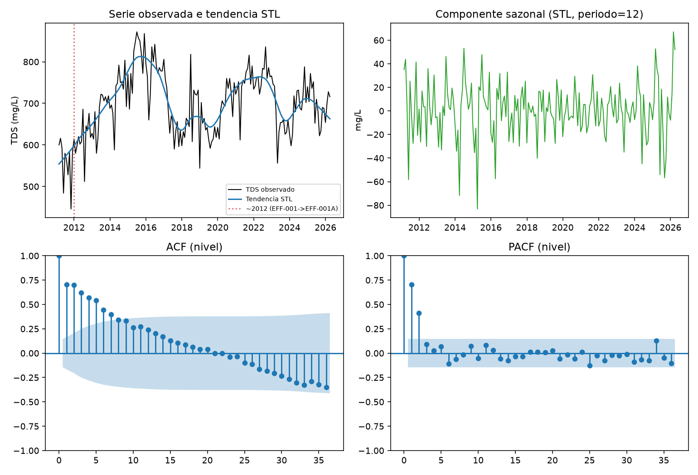

Objetivo desta lição: saber ler os dois gráficos de tendência do artigo de cabo a rabo, e carregar na manga o achado mais recente (já incorporado à conclusão do artigo em 2026-10-12): a tendência muda de sinal dependendo de quais anos você inclui.
Pré-requisito: Lição 0001 — Mapa geral do projeto. Fonte primária: ROTEIRO_AULA_TDS_LAGWRP.md, Seção C.
Este é o gráfico central da seção de resultados — Figura \ref{fig:tendencia-tds}, gerado por script_01_mann_kendall_theilsen.py.

resultados_comparacao.csv, não é coincidência, é matemática. Isso escondia a linha azul (MK/Sen) por completo atrás da verde (Theil-Sen) na figura original; corrigido em 2026-10-12 dando à linha de baixo uma "auréola" mais grossa (script_01_mann_kendall_theilsen.py, função gerar_figura) — a figura acima já reflete a correção.Mais detalhe: ficha completa.
Antes de qualquer ajuste, a série passa pelo diagnóstico estrutural — Figura \ref{fig:diagnostico-estrutura}, gerado por script_07_analise_estrutura_serie.py.

Mais detalhe: ficha completa.
Esta parte vem da bateria de robustez (issue #1, item 5b — remover os N primeiros anos, em script_31_testes_robustez_avancados.py). O parágrafo com esses números já foi colado em conclusao.tex (2026-10-12) — o artigo cita o texto corrido; não existe uma figura dedicada a esse achado no manuscrito, então o gráfico abaixo foi construído especificamente para esta lição.
Fonte dos números: results/testes_robustez_resultados.csv, item 5b_remover_primeiros_n_anos (idêntico para Mann-Kendall/Sen e Theil-Sen). Rodado em 2026-10-10.
EFF-001→EFF-001A, (b) uma troca de MDL (Method Detection Limit, limite de detecção do método analítico de laboratório)/método analítico em 2011-06-04 (p=0,017, já documentada em script_17), e (c) o início da seca 2012–2016. A leitura honesta para a banca: "a tendência de longo prazo é real na série completa, mas é sensível aos primeiros ~3 anos, por razões de instrumentação E de clima, não só de clima."3_mudanca_mdl, p=0,017).EFF-001→EFF-001A por volta de 2012-01 (teste de Chow, F=15,42, p<0,0001).